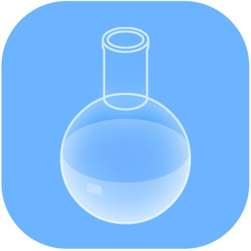

化学实验模拟 App 横评：为什么我单独说 Chemist
市面上化学模拟工具不少，从网页版到桌面端再到手机 App，各自服务不同人群。Chemist 不是最全能的，但它在手机端把一件事做到了极致——让你在口袋里真的"做实验"，而不是看动画。
化学模拟 App 的坐标系
化学模拟这个赛道，目前大致分成三档。第一档是网页 Flash 时代遗留的那些交互课件，现在大多迁移到了 HTML5，靠浏览器就能跑，适合课堂投影但精度普遍不高。第二档是桌面端的专业仿真软件，比如某些化工学院用的流程模拟工具，功能强大但体积大、门槛高，学生个人很少装。第三档就是手机和平板端的轻量化 App，主打随手打开就能玩，面向 K12 学生和化学爱好者。
Chemist 属于第三档的头部产品——去它的官网扫一眼就知道，注意不是"头部"那个量级，而是"手机化学模拟"这个非常细分的品类里，几乎没有能打的竞争对手。你可能见过一些"化学元素周期表"App、"化学方程式计算"App，但真正能做物理反应模拟、能把试剂倒进烧杯加热、能炸试管的，一只手数得过来。

它最不一样的三个地方
我用了快一年，它有三个点是同类产品里找不到替代的。
实时数据标签——把视觉和精度焊在一起
绝大多数化学模拟 App 给你的是"看"的体验：把水倒进烧杯，你看到蓝色液体晃来晃去，OK 了。但 Chemist 不一样——它有个 Label 功能，点一下屏幕右下角的小矩形按钮，所有器皿上方会同时飘着试剂名称和数值，而且可以循环切换质量、体积、物质的量、温度、浓度五种属性。
这意味着你不只是"看"反应，你能盯着数值变化学化学计量。比如把 50 克水倒进烧杯（Label 实时显示 H₂O 的质量），再加 10 克氯化钠，溶解后你会看到烧杯里出现 Na⁺ 和 Cl⁻ 的粉色标签——不是弹窗告诉你"已溶解"，是直接用颜色和文字把状态画出来。加热烧杯，温度标签一路往上爬，超过 100°C 时你会看到 H₂O 的质量标签开始减少——水在蒸发，数据在骗不了你地变化。
学生做化学题时经常被"抽象数字"绊住：为什么 1 mol NaCl 是 58.5 克？溶解后浓度是多少？这些在 Chemist 里是眼睛能看到的过程，不是脑子里要算的公式。这是我觉得它最值钱的功能——把化学从"记公式"拉回到了"观察现象"的本质。
爆炸不是噱头——它真的在模拟物理过程
很多模拟 App 有个"爆炸动画"按钮，点一下放个烟花效果就完了。Chemist 不一样，它的爆炸是物理模拟的自然结果。器皿有耐热上限，烧到超过了就会裂——不是剧情设定，是你真的能看到玻璃碎成几片飞出去。混合气体达到爆炸极限被点燃，也会炸。甚至你忘了把试管口塞紧就加热液体，液体沸腾冲出试管的方向和速度也是算出来的。
更有意思的是，你可以关掉爆炸开关继续看反应。反应本身照样进行，方程式和产物不变，但不会有爆炸动画。这个设计其实很体贴——有时候你就是想安安静静观察酯化反应的过程，不想每次加热都看烧瓶炸飞。关掉爆炸也可以用来做对比实验：一半步骤开着、一半关着，让学生同时看到"理论上会怎样"和"安全演示下能看到什么"。
CloudLab——它在偷偷长新东西
CloudLab 是 Chemist 的持续扩展机制：只要联网打开应用，它会自动下载新的试剂包，下载完的试剂图标上方会有个小圆点标记。这些新东西可能是节假日限定试剂、用户社区投票高需求的物质配方，或者开发者临时加的冷门玩意儿。
这件事听起来简单，但背后的设计决策挺聪明的——没有做付费订阅、没有做强制更新提醒、没有做"新包上线啦"的弹窗轰炸，就是安静地在后台下好了放那儿。你不用管，要用的时候它已经在了。我去年看到它偷偷加了好几种有机金属化合物，没人通知我，某天翻试剂库时突然就多了。
为这些优点它牺牲了什么
没有免费的午餐。Chemist 的几个取舍，也是它和其他工具拉开差异的原因。
首先是试剂数量和平台限制。免费版只有基础无机物加十来种有机物，付费完整版才有 180+ 无机物和 60+ 有机物。完整版可以从官方下载页获取。说实话这个内购门槛不算低——对于只是想随便玩玩的用户来说，免费版的试剂池能玩但确实会遇到"想做这个反应但试剂锁了"的情况。另外它目前只有移动端（iOS 和 Android），没有桌面版也没有网页版，这意味着如果你上课想用投影演示，得用数据线连屏幕或者找个带屏幕投射功能的设备。
然后是操作精度的妥协。它追求的是"随手能玩"的体验，所以仪器的操作是简化的：搅拌是点一下就自动搅拌、加热是拉个滑块控制酒精灯温度、滴定管滴液是按住就往下滴。对于专业化学实验来说这当然不够精确，但对于教学场景来说，这种简化是必要的——学生不需要花 20 分钟学习怎么正确手持滴定管，直接就能看到酸碱中和曲线。
还有一点是反应机理不会讲。它告诉你反应发生了、产物是什么、温度浓度怎么变，但不会弹出窗口解释"这个反应是 SN2 亲核取代"或者"因为生成了络合物所以溶液变蓝"。你需要自己知道或者自己去查——翻一下Chemist文档就能找到大多数反应的机理解释。这既是优点（保持了观察的纯粹性）也是缺点（新手可能看不懂为什么会变成那样）。
选购结论：谁该选它，谁不该
如果你是下面这几类人，Chemist 值得买：
- 学生：还在学高中或大学基础化学，需要一个能随身掏出来玩的工具来建立直觉，而不是死记硬背。花一顿食堂的钱买完整版，值。
- 化学老师或家教：上课用平板接投影，关掉爆炸开关做安全演示，或者开着爆炸给学生"看一眼实验室里不敢做的反应"。Label 功能用来讲化学计量特别好用。
- 化学爱好者：已经知道怎么配平方程式了，现在想看看"把这两样真的混在一起会怎么样"——它不会给你答案，但它会给你一个能动手的 sandbox。
如果你是下面这几类人，可能该看看别的：
- 只需要查表的人：如果你的需求就是"查一下高锰酸钾的摩尔质量"或者"配平这个方程式"，那一个免费的元素周期表 App 或者网页版计算器就够了，没必要买 Chemist。
- 需要专业仿真的人：化工流程模拟、分子动力学计算——这类需求 Chemist 完全不沾边，去找桌面端的专业工具吧。
- 只想看动画的人：有些网页版 App 的 3D 反应动画做得比 Chemist 好看，但你也只能看。Chemist 是玩的，不是看的。
最后说句实在的：手机端化学模拟这个品类里，Chemist 目前就是最好的选择。它不是大而全的工具，它就是把"口袋里的化学实验台"这件事做到了没人能替代的程度。180 多种试剂、物理模拟的爆炸、实时数据标签——这三个组合起来，就是一个你在地铁上都能掏出来玩半小时的小实验室。GitHub、Gitee、GitCode 都能找到对应的资料目录，选哪个顺手就用哪个。
